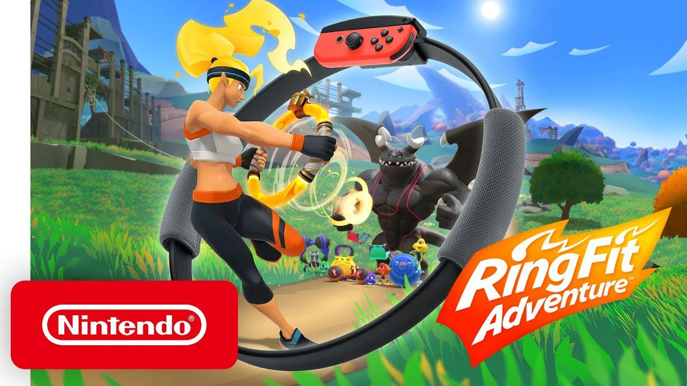

Ring Fit Adventure
Ring fit adventure – nietypowa gra wydana przez Nintendo na konsolę Nintendo Switch 18 października w 2019 roku.
Tytuł sportowy z elementami RPG zawierająca w zestawie Ring-Con, pierścień Pilates, który użytkownik trzyma i jeden Joy-Con, oraz pasek na nogę, kawałek materiału przymocowany do nogi gracza, który trzyma drugi Joy-Con.
Gra podchodzi do gier sportowych w nietypowy sposób dzięki możliwościami padów Nintendo Switch. Biegając w miejscu ruszamy się na mapie i wykonując ruchy Ring-Conem zbieramy różne przedmioty. Walka w tej grze polega na ćwiczeniach. Im lepiej wykonamy dane ćwiczenie tym większe obrażenia zadamy przeciwnikowi w grze. Idealna gra dla znudzonych klasycznymi grami sportowymi.